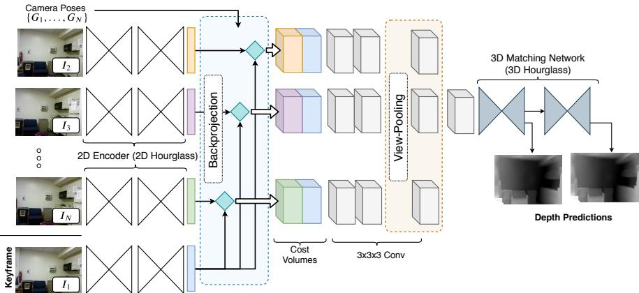
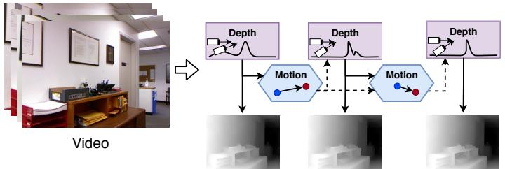

想象你举着手机拍一段走路的视频。人类一眼就知道「前面那张桌子离我一米半」，但计算机拿到的是一串平面像素——它怎么知道桌子离多远？这就引出了 SLAM / 三维视觉里一个老问题：Structure from Motion（SfM，运动恢复结构）。名字很学术，意思其实朴素：从「相机运动时的多张照片」里，同时把「相机在哪」和「东西离多远」一起算出来。
深度怎么从多帧里来？传统立体匹配的思路是：同一场景的不同视角看同一个点，会有「视差」，视差越大离得越近。DeepV2D 把这个思路可微化——先把每张图的 2D 特征反投影成一摞「代价体（cost volume）」，再用 3D hourglass 网络在这些体里做特征匹配，最后用可微的 arg-max 把深度「舀」出来。整条路径都是可微的，所以深度误差能反传回前面的特征网络。

原图注（Fig. 2）：The Depth Module performs stereo matching over multiple frames to estimate depth. First each image is fed through a network to extract a dense feature map. The 2D features are backprojected into a set of cost volumes. The cost volumes are processed by a set of 3D hourglass networks to perform feature matching. The final cost volume is processed by the differentiable arg-max operator to ...（原文 caption 较长，此处为开头部分） 怎么看这张图：① 左边是「逐帧提特征」；② 中间把 2D 特征「反投影」成一摞立体的 cost volume；③ 3D hourglass 在这些体里做匹配；④ 末端的「differentiable arg-max」就是那把「软勺子」——它可微，所以深度误差能一路反传。盯着「backproject → cost volume → hourglass → differentiable argmax」这条从左到右的流水线看。
原图注（Fig. 3）：The Motion Module updates the input pose estimates by solving a least squares optimization problem. The motion module predicts the residual flow between pairs of frames, and uses the residual terms to define the optimization objective. Pose increments $\bar{\xi}$ are found by performing a single differentiable Gauss-Newton optimization step. 怎么看这张图：① 上半部分是「预测残差流」；② 下半部分是「用残差流定义最小二乘目标 → 单次可微 GN 步求位姿增量 $\bar{\xi}$」；③ 记住：是「一次 GN 步」，是近似，不是完整 BA 反复迭代到收敛。这正是它和「完整 BA」的区别，也是原文承认的局限之一。
★ 抽象点：为什么「反向传播穿过优化器」反直觉
通常我们以为「优化 / 求解」是个「黑盒输出结果」的动作，导数进不去。但 GN 步本质是一串矩阵运算（算雅可比、解线性方程），这些运算本身可微。所以 DeepV2D 把「解一步优化」直接写进计算图——误差能穿过这一步继续往前传。这就是为什么它叫 differentible SfM。
原图注（Fig. 8）：Motion Module Architecture: The Encoder (left) extracts a dense 1/4 resolution feature map for each of the input images. The Residual Flow Network (right) takes in a pair of feature maps and estimates the residual flow and corresponding weights. This residual flow is estimated with an encoder-decoder network, with skip connections formed by concatenating feature maps. 怎么看这张图：① 左边 Encoder 把每张图变成低分辨率但稠密的特征图；② 右边 Residual Flow Network 拿「一对特征图」进去，输出残差流和权重；③ skip connection（跳跃连接）用拼接特征实现。这张图是 Fig.3 那「单次 GN 步」落地的工程细节。
DeepV2D 的实验设计很能说明它的卖点——泛化。它在 NYU 一个数据集上训练，然后零样本（zero-shot）直接用到 ScanNet、SUN3D（图中标 *）、KITTI 上，不需要为每个数据集重新调。这背后靠的就是「几何归纳偏置」：它学的不是某个数据集的像素统计，而是「多视图几何」这个结构本身。

原图注（Fig. 1）：DeepV2D predicts depth from video. It is the composition of classical geometric algorithms, made differentiable, and combined into an end-to-end trainable network architecture. Video to depth is broken down into the subproblems of motion estimation and depth estimation, which are solved by the Motion Module and Depth Module respectively. 怎么看这张图：① 这是整篇的「总览」：左边视频进，右边拆成 Motion 和 Depth 两个模块；② 注意配色与标注——原文用不同颜色区分两个子问题；③ 它直观对应我们第 2 节那张「把 SfM 塞进网络」的自绘图，可对照着看。
原图注（Fig. 5）：Impact of the number of iterations (left) and frames (right) on sc-inv validation accuracy. (left) shows that DeepV2D quickly converges within a small number of iterations. In (right) we see that accuracy consistently improves as more views are added. DeepV2D can be applied to variable numbers of views for a variable number of iterations without retraining. 怎么看这张图：① 左图横轴是「迭代次数」，曲线很快压平——说明几次迭代就够；② 右图横轴是「加入的视图数」，精度随视图增多稳步上升；③ 关键结论在 caption 末尾：可变视图数 / 迭代数，无需重训。这和传统「为每个设置重训」形成对照。